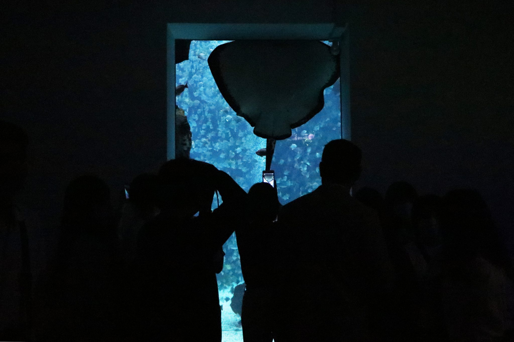
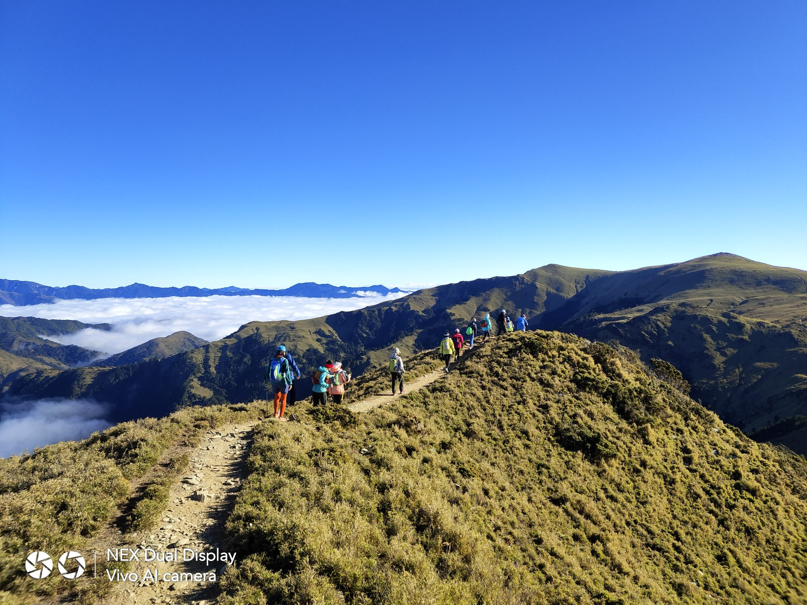
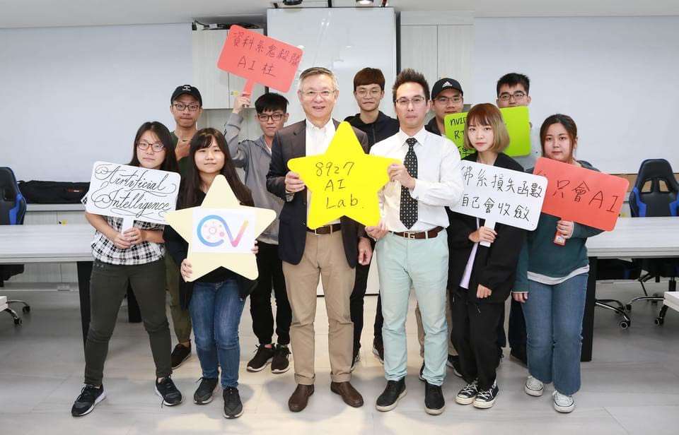

博物館C
大旱來襲、掌水工高齡化 科技節水可行嗎？
2021/04/08・林昕璿、吳冠伶、陳嘉怡、徐嘉璟
救援結束 消防員的災後心理重建之路
2021/04/28・林昕璿、吳冠伶、陳嘉怡、徐嘉璟
「藝」情嚴峻——暫別舞台後，表演工作者如何延續創作？
2021/06/10・林昕璿、吳冠伶、陳嘉怡、徐嘉璟

囚籠內的困獸：展演動物福利如何保障？
2021/05/06・陳宥菘、詹湘淇、黑立安、甘媄心
撐起特教生的那雙手——師生比長年失衡，資源班教師身負重擔
2021/05/27・陳宥菘、詹湘淇、黑立安、甘媄心

當民眾走入山林——事故增加、生態惡化，登山教育仍待落實
2021/06/16・陳宥菘、詹湘淇、黑立安、甘媄心
教室A0
宿舍「漲」聲響起 東吳、清大遭批罔顧程序
2020/11/26．陳宥菘
董事會干預校長遴選 東海師生控侵犯大學自治
2020/12/31．陳宥菘
高醫車位供不應求 學生質疑校方超賣停車證
2020/10/29．詹湘淇
宿舍翻新學生買單 中央生控宿費調漲
2020/11/05．詹湘淇
勞動事實認定歧異 師資生籲發放教育實習津貼
2020/11/19．詹湘淇
青年遊行倡基本收入 制度施行經費來源存疑
2020/12/17．詹湘淇
實驗室A1
中研院研究紋藤壺 首證微塑膠增後代死亡率
2020/12/16・陳嘉怡
裝置偵測消防員跌倒 提升火場救災安全
2020/12/02・陳嘉怡

AI檢測脊椎傾斜 人體3D影像一「拍」即合
2020/12/02・陳嘉怡
中大以熱能取代電能 研究降銅矽鍵合成本
2020/12/30・林昕璿
盼解農廢難題 菱角殼巧變超級電容
2020/12/02・林昕璿
防芒果黑斑減農損 電漿殺菌除病源
2020/10/29・林昕璿
放映院B
漁業垃圾危害生態 政府溯源把關廢棄漁網
2020/12/24・林昕璿、徐嘉璟、陳嘉怡
唱出時代記憶 溫博館重現北投那卡西風華
2020/11/05・林昕璿、徐嘉璟、陳嘉怡
疫情危機化外交轉機 台與拉美國家關係趨緊密
2020/10/15・陳宥菘、徐宇昕
愛河掀水域解放議題熱潮 官民合作盼推親水精神
2020/12/02・陳宥菘、徐宇昕
首辦灣流音樂祭 臺大生盼復振本土語言
2020/10/21．詹湘淇、王崴漢
原創條例難落實 致原民文化誤用爭議不斷
2020/11/25．詹湘淇、王崴漢
操場A3
北市大內戰 呂杰修沙灘角力連霸
2020/10/22．陳宥菘
短水道泳賽高手雲集 前三齊破全國紀錄
2020/12/17．陳宥菘
大專賽舞力四射 OSTAR融舞風創新意
2020/12/31．陳宥菘
【全大運】備戰東奧 北大湯智鈞射下三金
2020/11/04．詹湘淇
敗部重生轉念終奪冠 吳坤霖締撞球四連霸
2020/12/02．詹湘淇
馬場馬術考驗人馬默契 臨場反應成關鍵
2020/12/16．詹湘淇
藝廊A2
揮別2020 《巢》成接納負能量場域
2020/12/30・陳嘉怡
與透明樹脂交融 顏料成繪畫主體
2020/12/09・陳嘉怡
群眾互動創即興空間 李明潔盼表演者舞出日常
2020/12/16・陳嘉怡
向光生長的本能 丁芯奕「植」入生命科學視角創作
2020/12/09・林昕璿
以水流、鋼珠塑時間感 「渦城」融台北印象
2020/10/21・林昕璿
堆疊成建築 保麗龍箱塑基隆景象
2020/10/01・林昕璿